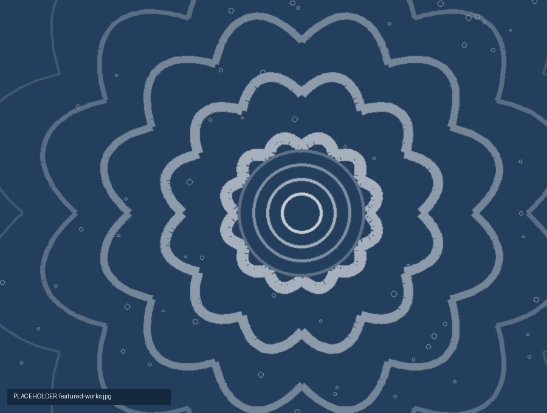
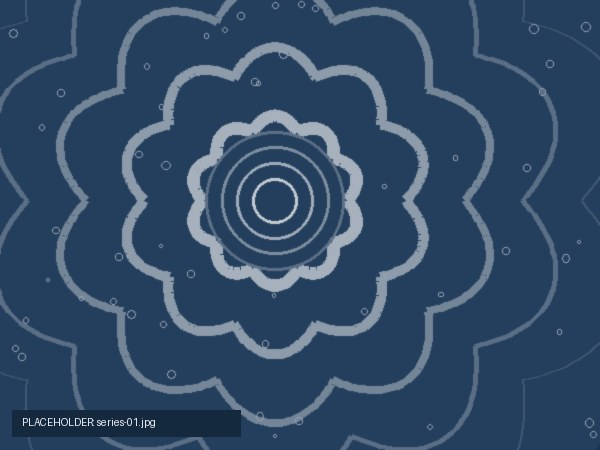
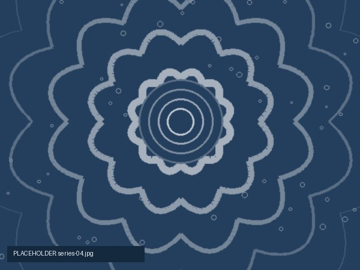

扎染是蓝的旋律，弧与白在棉布之间奏出有韵律的沉静，每一块都像是画，也都是可以触摸和使用的蓝白诗意空间。

以传统团花纹为核心图案，采用天然蓝靛手工扎染，层层晕染如水墨入纸。铺陈于茶席或长桌，安静又有仪式感。
不同材质与用法中一脉相承的蓝，日常与收藏皆宜。

柔软亲肤，蓝白交融，四季皆宜的百搭单品。

传统纹样融入现代家居，日用即道。

可穿在身上的非遗，每件纹样独一无二。

团花入室，把东江山水的蓝抱在怀里。

一桌一布，茶席之间自有雅意。

把老手艺背出门，轻便又有态度。

以布为纸，蓝白纹样自带东方气韵。

小方巾大乾坤，入门体验的首选。
可接受婚庆伴手礼、活动纪念品、空间软装等定制需求。选择纹样、确认工艺、面料与尺寸，即可开启属于你的蓝白定制之旅。
根据主题与场合，确定团花纹样与蓝白基调，出效果图确认。
老手艺人纯手工扎染，每件成品的纹样皆独一无二。
礼盒包装、活动分发、空间陈设，让蓝白之美落地生根。